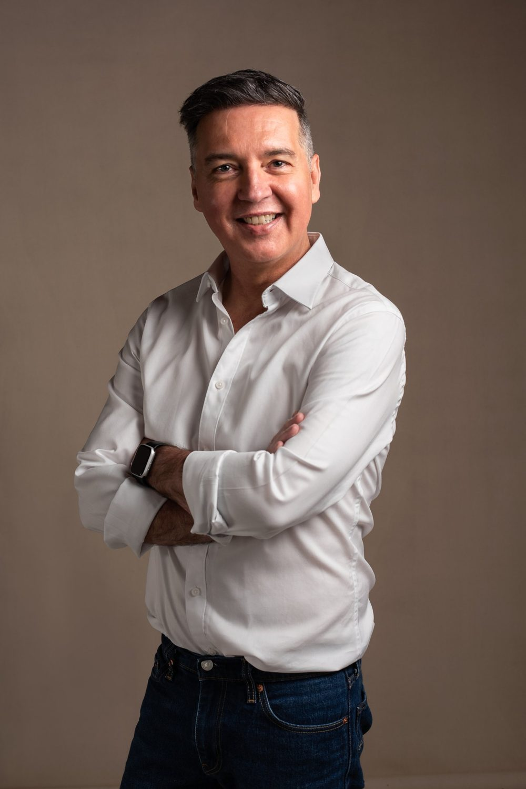
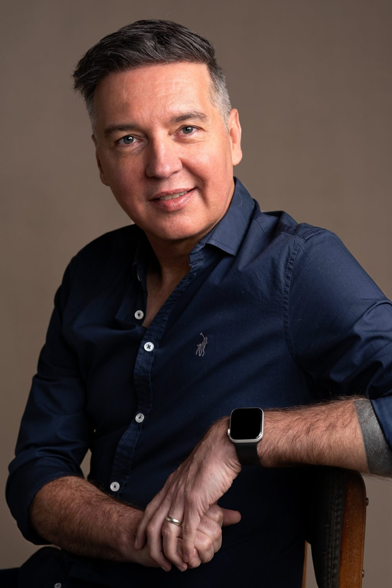
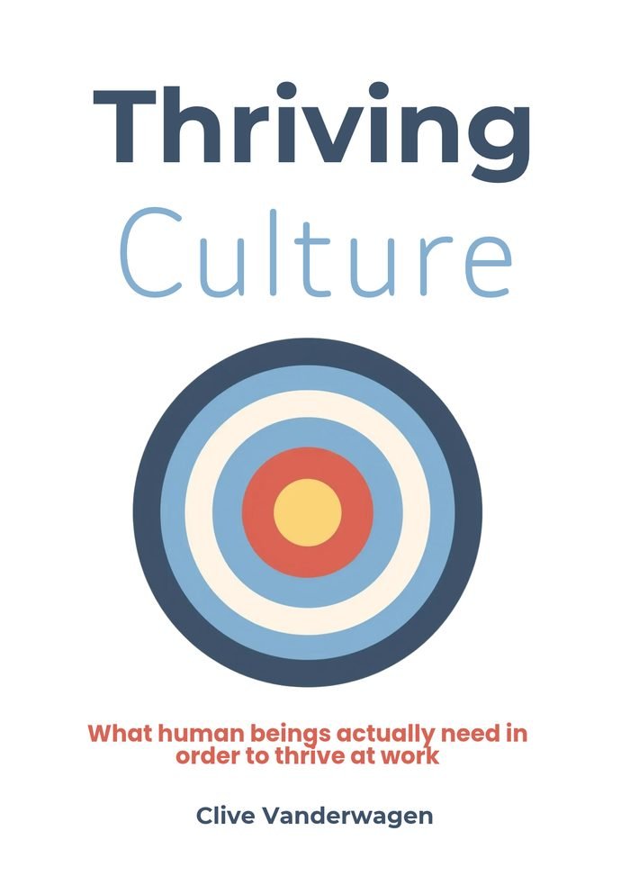

What Are You Hungry For?
Structure, recognition and stimulus: the three psychological hungers every team brings to work, and why customer experience training that only targets behaviour doesn't stick.
I work with what is driving it.
I'm Clive Vanderwagen, a team coach, trainer and author of Thriving Culture. I work with leadership teams and service teams to change the mental models and unmet needs underneath how people lead, collaborate and serve. That's why the change lasts, and why it shows up in the numbers.

A customer experience programme for more than 320 frontline staff at a major South African financial services group. No new scripts. We worked on mental models, ego states and ownership, and customers felt the difference.
I've worked with leaders and teams at Old Mutual, Momentum, TymeBank, MultiChoice, Henkel, AngloGold Ashanti, GEMS and The Capital Hotel Group, and with companies across South Africa, Europe and Asia. ReadyPeople is a double winner at the 2026 African Excellence Awards, for customer experience training and for leadership and team development.
Whether it's a leadership team, a team that won't gel or a service floor that can't hit its numbers, the visible problem is rarely the real one.
What you seeCapable managers who still micromanage, avoid hard conversations or lose people.
What's driving itHow they relate to their people under pressure, and which psychological needs they're meeting or starving. We build that capacity using Transactional Analysis and Functional Fluency.
What you seeMeetings that go in circles, quiet conflict, a team that's polite but not effective.
What's driving itUnspoken patterns, competing motivations and the things nobody says. I coach the team as a system and use the Enneagram to make motivation visible.
What you seeStaff who know the standards and still don't deliver them when it matters.
What's driving itWhat people believe about customers and about their own role. We work on mental models and ownership, so the behaviour holds on the hard calls.

Nothing off the shelf. Every programme starts with your strategy and ends with something you can measure.
I work in the moment, with real teams, on what's actually happening in the room. The psychology underneath is serious, but I translate it into tools people use on a Monday morning.

Most culture problems get treated like poster problems: fix the values, run the survey, tidy the comms. The real issue is whether people's basic psychological needs are being met, every day, by the people leading them.
Drawing on Transactional Analysis, the Enneagram and work inside some of South Africa's largest financial services and hospitality brands, it makes the case for what actually changes a culture, and what just looks good on a slide.
Keynotes and talks for leadership forums, sales conferences and team events. Before coaching, I was an actor, journalist and creative director. I know how to hold a room, and I don't do motivational fluff.
Structure, recognition and stimulus: the three psychological hungers every team brings to work, and why customer experience training that only targets behaviour doesn't stick.
Scripts and service standards change what people say for a few weeks. If you want the change to hold, you have to work on what people believe about the customer, and about themselves.
Values workshops and engagement surveys describe a culture. They don't change one. What changes it is whether people's basic psychological needs are met, every day, by the people leading them.
A 30-minute discovery call. You tell me what's happening, I'll tell you honestly whether I can help and what it would take.